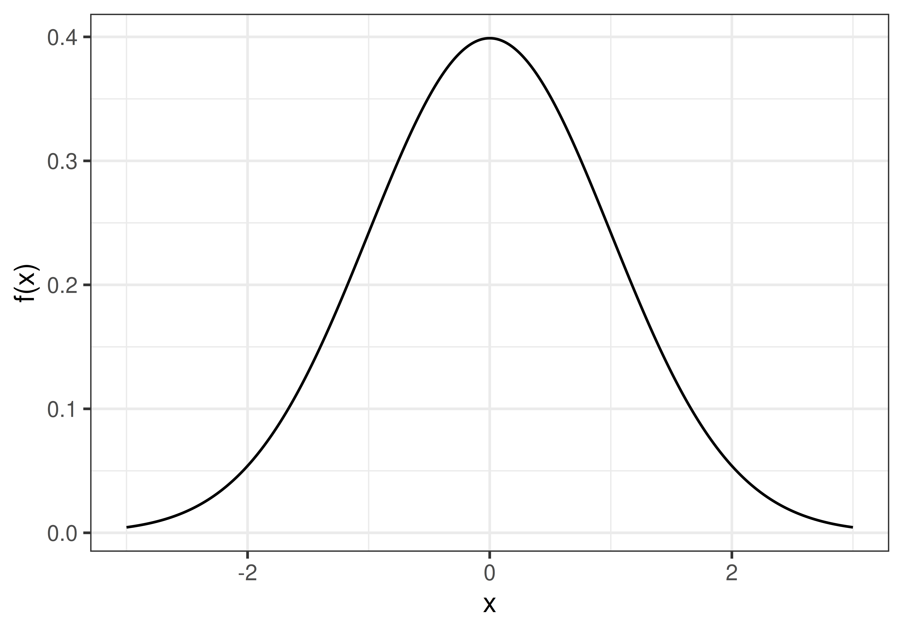
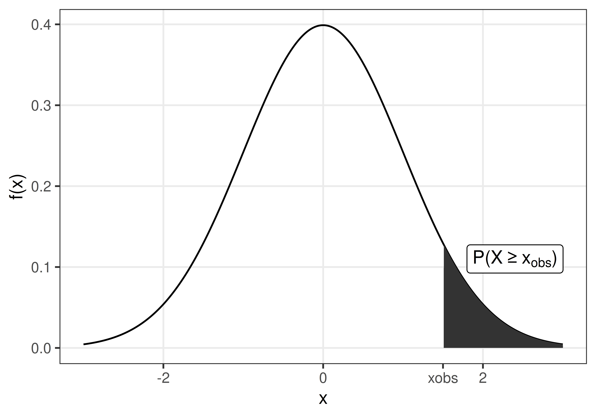
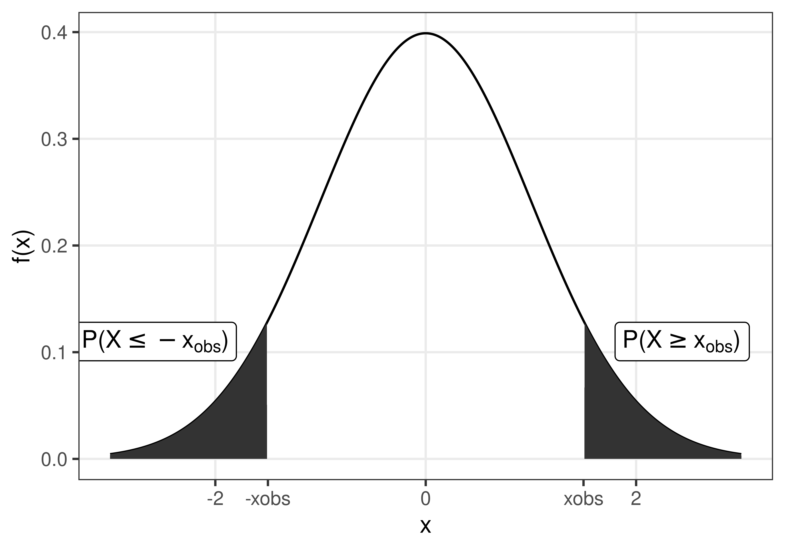
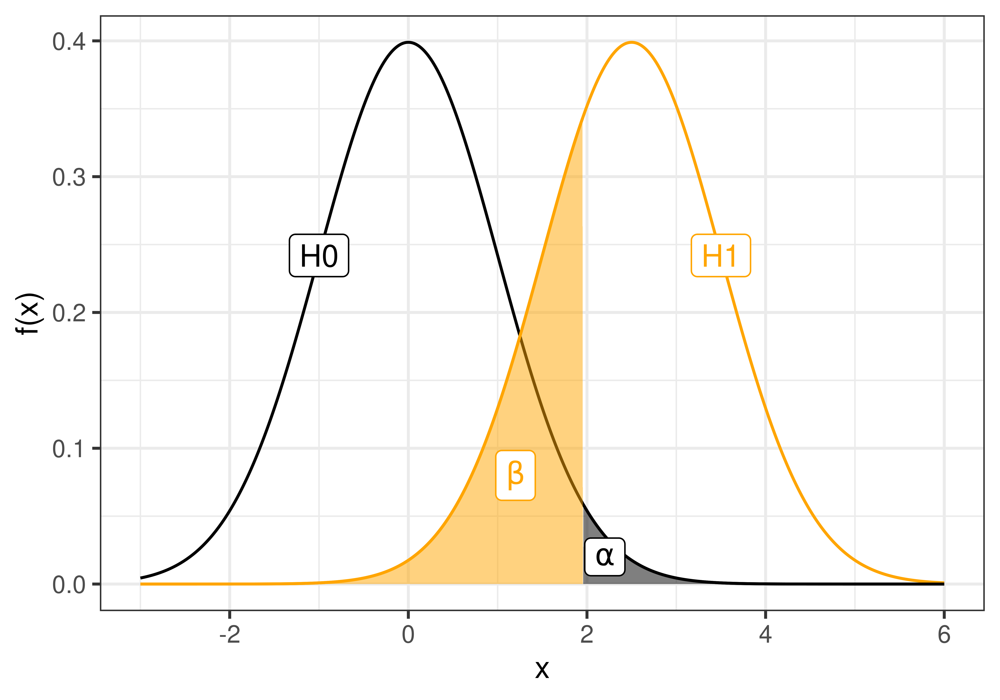

1 Introduction to hypothesis tests
Statistical inference is to draw conclusions regarding properties of a population based on observations of a random sample from the population.
A hypothesis test is a type of inference about evaluating if a hypothesis about a population is supported by the observations of a random sample (i.e by the data available).
Typically, the hypotheses that are tested are assumptions about properties of the population, such as proportion, mean, mean difference, variance etc. A hypothesis test can for example test if the population mean is greater than 0.
In summary, a hypothesis test involves defining a null and alternative hypothesis, selecting an appropriate test statistic and computing the observed value of this statistic. Finally, the probability of the observed value (or something more extreme) if the null hypothesis is true is computed and based on this probability and a predefined significance level, the null hypothesis is either accepted or rejected.
1.1 The null and alternative hypothesis
There are two hypotheses involved in a hypothesis test, the null hypothesis, \(H_0\), and the alternative hypothesis, \(H_1\).
The null hypothesis is in general neutral; “no change”, “no difference between the groups”, “no association”. In general we want to show that \(H_0\) is false.
The alternative hypothesis expresses what the researcher is interested in, such as “the treatment has an effect”, “there is a difference between the groups”, “there is an association”. The alternative hypothesis can also be directional, e.g. “the treatment has a positive effect”.
1.2 To perform a hypothesis test
- Define \(H_0\) and \(H_1\)
- Select an appropriate significance level, \(\alpha\)
- Select an appropriate test statistic, \(T\), and compute the observed value, \(t_{obs}\)
- Assume that the \(H_0\) is true and compute the sampling distribution of \(T\).
- Compare the observed value, \(t_{obs}\), with the computed sampling distribution under \(H_0\) (the so called null distribution) and compute a p-value.
- Based on the p-value either accept or reject \(H_0\).
The sampling distribution is the distribution of a sample statistic (e.g mean or proportion). The sampling distribution can be obtained by drawing a large number of samples from a population.
A null distribution is a sampling distribution when the null hypothesis is true.
1.3 The p-value
The p-value is the probability of observing a value at least as extreme as the observed value, if \(H_0\) is true.


1.4 Significance level and error types
A hypothesis test is used to draw inference about a population based on a random sample. The inference made might of course be wrong. There are two types of errors;
Type I error is a false positive, a false alarm that occurs when \(H_0\) is rejected when it is actually true. Examples: “The test says that you are covid-19 positive, when you actually are not”, “The test says that the drug has a positive effect on patient symptoms, but it actually has not”.
Type II error is a false negative, a miss that occurs when \(H_0\) is accepted, when it is actually false. Examples: “The test says that you are covid-19 negative, when you actually have covid-19”, “The test says that the drug has no effect on patient symptoms, when it actually has”.
| Accept H0 | Reject H0 | |
| H0 is true | Type I error, false alarm | |
| H0 is false | Type II error, miss |
The probability of type I and II errors are denoted \(\alpha\) and \(\beta\), respectively.
\[\alpha = P(\textrm{type I error}) = P(\textrm{false alarm}) = P(\textrm{Reject }H_0|H_0 \textrm{ is true})\] \[\beta = P(\textrm{type II error}) = P(\textrm{miss}) = P(\textrm{Accept }H_0|H_1 \textrm{ is true})\]
The significance level, \(\alpha\), is the risk of false alarm, i.e. to say “I have a hit”, “I found a difference”, when the the null hypothesis (“there is no difference”) is true.

The risk of false alarm is controlled by setting the significance level to a desired value. We do want to keep the risk of false alarm (type I error) low, but at the same time we don’t want many missed hits (type II error).
The significance level should be set before the hypothesis test is performed. Common values to use are \(\alpha=0.05\) or 0.01.
If the p-value is above the significance level, \(p>\alpha\), \(H_0\) is accepted.
If the p-value is below the significance level, \(p \leq \alpha\), \(H_0\) is rejected.
Another property of a statistical test is the statistical power, defined as
\[\textrm{power} = 1 - \beta = P(\textrm{Reject }H_0 | H_1\textrm{ is true}).\]